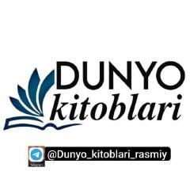

YQReal voqealarga asoslangan, oddiy insonning g'ayrioddiy sarguzashtlari haqida roman.
Bu roman xayolot mahsuli emas, to'laligicha real voqealarga asoslangan deb ta'kidlanadi. Oddiy bir insonning hayotida g'ayrioddiy hodisa ro'y beradi va shu tariqa bosh qahramonning sarguzashtlari boshlanadi. Yaralangan qush timsolida insonning qiyinchiliklarga qaramay hayotda davom etishi tasvirlanadi.